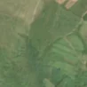
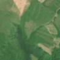

2,2 ha de pădure schimbată lângă Șigău
Între vara lui 2025 și 25 aprilie 2026, pe aproximativ 2,2 ha de pădure din comuna Bobâlna, lângă Șigău, județul Cluj, imaginile Sentinel-2 arată că vegetația a dispărut sau s-a schimbat puternic. E o schimbare care merită verificată.
Autorizația de tăiere
pășune, nu pădure
Analistul nu vede pădure tăiată: înainte era pășune, fâneață sau teren cu copaci răzleți și tufăriș, nu pădure închisă. Dacă s-au scos copaci de pe pășune, și asta cere autorizație de la ocolul silvic (Codul silvic, art. 60), dar aceste autorizații nu apar sigur în registrul public, așa că nu putem spune dacă există. Nu e dovadă de ilegalitate.
Ce se vede în poze: În poza detaliată din 2024, zona marcată are copaci răzleți printre ierburi, deci nu era pădure deasă. În poza «după» zona e mai deschisă la culoare decât pădurea din jur, ceea ce arată că pășunea a fost curățată de copaci sau tufișuri.


Înainte și după: Copernicus Sentinel-2, 10 m pe pixel, conturul zonei cu portocaliu. Poza detaliată (Esri World Imagery) e de acum 1–4 ani: arată ce era acolo înainte, nu tăierea.
Pe scurt
- Identificator
- 20260425_47112_23708
- Locul
- Șigău, comuna Bobâlna, județul Cluj (SIRUTA 56096)
- Coordonate (centru)
- 47.11178, 23.70756 · Google Maps · OpenStreetMap
- Suprafața
- 2,2 ha (din pixeli de 10 m; ± câțiva pixeli pe margine)
- Pădurea întreagă
- în vara lui 2025 (de atunci, nori sau iarnă)
- Prima imagine cu schimbarea
- 25 aprilie 2026
- Imagini în care se vede schimbarea
- 13
- Cât de sigur e semnalul din satelit
- scăzută
- Autorizația cea mai apropiată
- APV 2500145311450 · Ocolul Silvic Dej, la 69 m de zonă
- Terenul
- în afara amenajamentelor silvice publicate (pășune, mal de apă sau pădure privată fără amenajament în registru)
- Pădure pierdută în jur, alți ani
- 2003, 2014, 2021 (Hansen)
- Garda Forestieră
- Cluj
Dacă vrei să verifici sau să sesizezi
- Pădurile din județul Cluj sunt în grija Gărzii Forestiere Cluj, care controlează tăierile și dă amenzile.
- Autorizația găsită în zonă e emisă de Ocolul Silvic Dej.
- Formularul Gărzii Forestiere Naționale primește sesizări și fără nume. Trimite linkul acestei pagini, coordonatele și pozele. Dacă tăierea e în desfășurare, sună la 112.
- Autorizațiile și transporturile de lemn se pot căuta în Inspectorul Pădurii.
Pagina arată ce se vede din satelit și ce scrie în registrul public; nu e o dovadă în sine.
Cum citezi zona
Linkul acestei pagini nu se schimbă. Dacă zona iese vreodată de pe hartă, pagina rămâne, cu data și cu ce știam despre ea.
Pădurea RO, zona 20260425_47112_23708: 2,2 ha, Șigău, comuna Bobâlna, județul Cluj; schimbare văzută din satelit între vara lui 2025 și 25 aprilie 2026. https://iliemihai.github.io/padurea-ro/zona/20260425_47112_23708/ (consultat la [data]). Date: CC BY 4.0.
Datele zonei: GeoJSON · toate zonele: date deschise · licența CC BY 4.0.
Istoricul zonei pe hartă
Starea se poate schimba când registrul publică o autorizație sau când analistul vede poze mai bune. O ținem aici, ca un link citat să arate și ce spuneam atunci.
Pe hartă cel târziu din 5 noiembrie 2026.
- 5 noiembrie 2026 – azi · pășune, nu pădure
Detalii tehnice, pentru verificare
De ce acest nivel de încredere:
- văzută schimbată în 13 imagini diferite
- pădurea din jur e neschimbată
- ultima dată am văzut-o intactă în vara lui 2025 (de atunci, nori sau zăpadă)
- fără părerea AI
Ce a văzut analistul cu context: DETAILED BEFORE arată coroane separate pe fond ierbos, iar coronamentul din 2000 este de doar 21% (sub pragul de 60% al pădurii închise). În AFTER, dreptunghiul are un ton mai deschis, bej-verzui, față de pădurea verde-închis din jur, fără continuare în afara conturului, fără urme de arsură și fără drum nou. Autorizația APV este la 69 m, cu suprapunere 0%, iar registrul indică «vegetație»; schimbarea este discretă, deci încrederea este moderată.
- Placa Sentinel-2
- 34TGT
- NDVI de referință
- 0.77
- NBR de referință
- 0.53
- Scăderea în pădurea din jur
- 0.0
- Persistență
- 0.8
- NDVI / NBR după
- 0.38 / 0.127
- Analistul cu context (model)
- pasune · 0.6
Cum se calculează fiecare: metodologia.
Pune harta zonei într-un articol
Copiază codul în articol (merge în majoritatea site-urilor de știri). Sau pune doar linkul: WhatsApp, Facebook și X arată singure poza zonei.